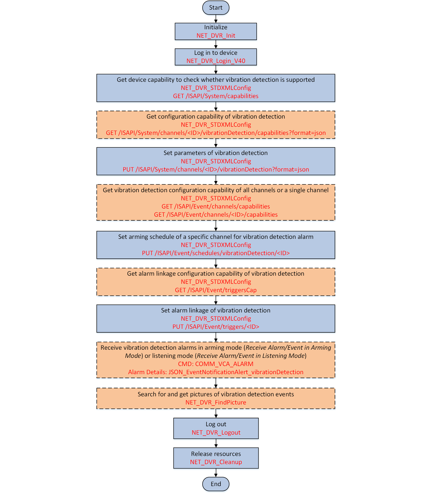

Vibration detection function can be applied to the scenes in which the
real-time vibration status of devices should be detected in case people damage the devices
on purpose. You can configure the arming schedule and linkage actions of the vibration
detection alarm. For those triggered alarms, you can also search for the related
pictures.

Figure 1 API Calling Flow of
Configuring Vibration Detection Alarm
-
Call NET_DVR_STDXMLConfig to transmit the request URI: GET
/ISAPI/System/capabilities for getting the device capability to check
whether vibration detection is supported by the device.
The device capability is returned by lpOutputParam in the message XML_DeviceCap.
If the node <isSupportVibrationDetection> is returned in the message
and its value is "true", it indicates that the vibration detection is
supported, and then you can continue to perform the following steps.
Otherwise, the vibration detection is not supported, please end
this task.
- Optional:
Call NET_DVR_STDXMLConfig to transmit the request URI: GET
/ISAPI/System/channels/<ID>/vibrationDetection/capabilities?format=json for getting configuration capability of
vibration detection.
-
Call NET_DVR_STDXMLConfig to transmit the request URI: PUT
/ISAPI/System/channels/<ID>/vibrationDetection?format=json and set lpInputParam to the message JSON_VibrationDetection for setting parameters of vibration
detection.
- Optional:
Call NET_DVR_STDXMLConfig to transmit the request URI: GET
/ISAPI/Event/channels/capabilities or /ISAPI/Event/channels/<ID>/capabilities for getting event configuration capability of
all channels or a single channel for knowing the configuration details or
notices.
-
Call NET_DVR_STDXMLConfig to transmit the request URI: PUT
/ISAPI/Event/schedules/vibrationDetection/<ID>, set the <ID> in the request URI in the format of
"vibrationDetection-<channelID>", e.g.,
/ISAPI/Event/schedules/vibrationDetection/vibrationDetection-1, and set
lpInputParam to the message XML_Schedule for setting arming schedule of a specific
channel for vibration detection.
- Optional:
Call NET_DVR_STDXMLConfig to transmit the request URI: GET
/ISAPI/Event/triggersCap for getting alarm linkage configuration
capability of vibration detection.
The alarm linkage capability is returned by the output parameter
pointer lpOutputParam in the message XML_EventTriggersCap.
-
Call NET_DVR_STDXMLConfig to transmit the request URI: PUT
/ISAPI/Event/triggers/<eventType>-<channelID> and set the <ID> in the request URI in the format of
"vibrationDetection-<channelID>", e.g.,
/ISAPI/Event/triggers/vibrationDetection-1, and set lpInputParam to the message XML_EventTrigger for setting the alarm linkages of vibration detection alarms.
- Optional:
Set the uploading message type (lCommand) in
the alarm callback function (MSGCallBack) to "COMM_VCA_ALARM" (macro definition value:
0x4993) for receiving vibration detection alarm in arming mode (refer to Receive Alarm/Event in Arming Mode for details) or in listening mode (refer to Receive Alarm/Event in Listening Mode for details) when alarm is triggered.
- Optional:
Call NET_DVR_FindPicture and set byFileType to "0x58" in the structure NET_DVR_FIND_PICTURE_PARAM to search for
the pictures of the vibration detection events that trigger alarms.
-
Call NET_DVR_FindNextPicture_V50 to get
the pictures.
-
Call NET_DVR_CloseFindPicture to stop searching for pictures and
release resources.
Call NET_DVR_Logout and NET_DVR_Cleanup to log out of the device and release resources.